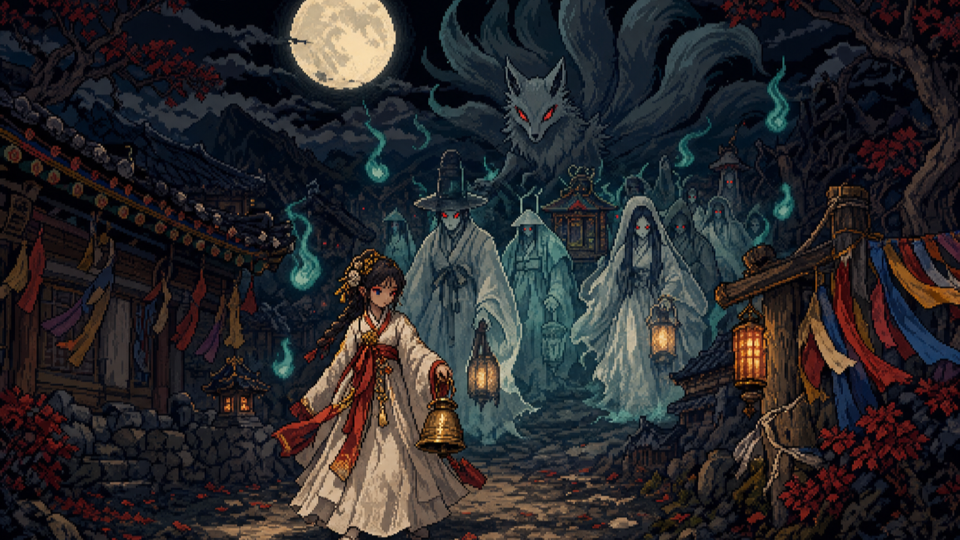

AI가 만든 게임
사람이 코드를 쓰지 않고, AI 팀(기획·프로그래머·아트·사운드·QA)이 2주씩 만든 게임입니다. 설치 없이 브라우저에서 바로 해 볼 수 있어요. 완성작이라기보다 실험 기록이라, 만든 과정과 막힌 곳도 함께 남겨 둡니다.
사람이 코드를 쓰지 않고, AI 팀(기획·프로그래머·아트·사운드·QA)이 2주씩 만든 게임입니다. 설치 없이 브라우저에서 바로 해 볼 수 있어요. 완성작이라기보다 실험 기록이라, 만든 과정과 막힌 곳도 함께 남겨 둡니다.